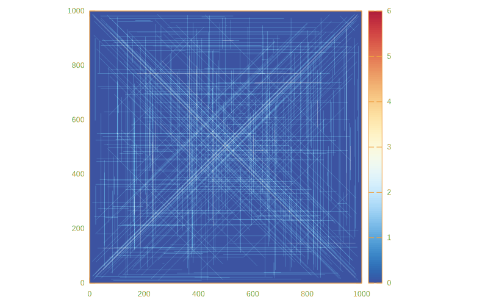
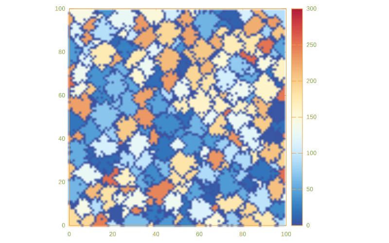
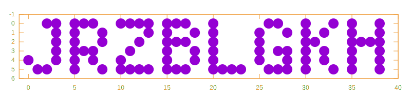

Advent of Code 2021
This year I will publish my solutions for Advent of Code in Haskell, using Entangled to do Literate Programming.
Advent of Code
Advent of Code is an anual coding challenge keeping nerds off the street for the entire merry month of decemeber. This is officially the best way to learn a new programming language or improve on your existing skills.
Spoiler warning
If you’re still trying to solve AOC2021, this site contains spoilers.
Entangled
Entangled is a tool for Literate Programming. My challenge for this years’ Advent of Code is to create a set of beautifull solutions, that are completely documented in a literate form. The idea is that the code you see here is the complete solution to a problem. Think of Entangled as a content-management system for code blocks in your Markdown documents. The code blocks are assembled into compilable code, while changes are also tracked back to your markdown files. This means you can still debug and work with your favourite IDE.
Instructions
To run this code, I recommend installing Haskell using the GHCUp installer. Run all solutions:
cabal run x2021 -- -aGeneric remarks
All solutions use the RIO library to replace the standard Prelude. This saves a long list of standard imports and is much better suited to modern Haskell practices. Most of the input parsing is done through Megaparsec, for which I have a submodule that contains some common types and functions, see the boilerplate section.
License
This code is licensed under the Apache v2 license, see LICENSE file in this repository.
Day 1: Sonar Sweep
It seems we are going on a deep dive this year! We are given the height data of a sonar sweep of the bottom of the sea.
file:app/Day01.hs
module Day01 where
import RIO
import qualified RIO.Text as Text
readInput :: MonadIO m => m [Int]
readInput = do
text <- Text.lines <$> readFileUtf8 "data/day01.txt"
return $ mapMaybe (readMaybe . Text.unpack) text
<<solution-day-1>>
<<run-solutions>>
The question is: how often do we find this sequence ascending? We may solve this by computing the difference between each consecutive element in the input list. Then we need to know the number of possitive numbers in the difference list:
«solution-day-1»
solutionA :: [Int] -> Int
solutionA = length . filter (> 0) . diff
where diff (a1:a2:as) = a2 - a1 : diff (a2:as)
diff _ = []In the second part we need to do a sliding sum over the list of input numbers, reducing the problem to that of part A:
«solution-day-1»
solutionB :: [Int] -> Int
solutionB = solutionA . slidingSum
where slidingSum (a1:a2:a3:as) = a1 + a2 + a3 : slidingSum (a2:a3:as)
slidingSum _ = []In hindsight, a more efficient solution would be:
solutionB = length . filter (> 0) . diff3
where diff3 (a1:a2:a3:a4:as) = a4 - a1 : diff3 (a2:a3:a4:as)
diff3 _ = []The middle terms in the finite difference drop out.
Day 2: Dive!
We are given our first mini instruction set! We need to steer the submarine using an instruction set forward, down or up with a number attached. We get to do our first parsing of this year (yay!).
file:app/Day02.hs
module Day02 where
import RIO
import RIO.List (foldl)
import qualified RIO.Text as Text
import Parsing (readInputParsing, Parser, lexeme, string, integer, sepEndBy1, eol)
<<solution-day-2>>
<<run-solutions>>We start by defining a datatype and the associated parser:
«solution-day-2»
data Instruction
= GoForward Int
| GoUp Int
| GoDown Int
deriving (Show)
instructions :: Parser [Instruction]
instructions = sepEndBy1 (lexeme direction <*> integer) eol
where direction = (string "forward" $> GoForward)
<|> (string "up" $> GoUp)
<|> (string "down" $> GoDown)
readInput :: (MonadIO m, MonadReader env m, HasLogFunc env) => m [Instruction]
readInput = readInputParsing "data/day02.txt" instructionsIn the first part, we are asked to do some Turtle movement. We can reduce the set of instructions in a foldl if we define a function that updates the position for each move:
«solution-day-2»
type Pos = (Int, Int)
moveA :: Pos -> Instruction -> Pos
moveA (x, y) (GoForward dx) = (x + dx, y)
moveA (x, y) (GoUp dy) = (x, y - dy)
moveA (x, y) (GoDown dy) = (x, y + dy)
solutionA :: [Instruction] -> Int
solutionA inst = x * y
where (x, y) = foldl moveA (0, 0) instIn the second part, the interpretation of the instructions changes slightly, but the only thing we have to change is the moveA function and the corresponding accumulator data type (I’m using NamedFieldPuns and RecordWildCards, which I prefer over lenses in these simple cases):
«solution-day-2»
data Navigation = Navigation
{ navDepth :: Int
, navAim :: Int
, navPos :: Int
} deriving (Show)
moveB :: Navigation -> Instruction -> Navigation
moveB n@Navigation{..} (GoForward x) = n{ navPos = navPos + x
, navDepth = navDepth + navAim * x }
moveB n@Navigation{..} (GoUp x) = n{ navAim = navAim - x }
moveB n@Navigation{..} (GoDown x) = n{ navAim = navAim + x }
solutionB :: [Instruction] -> Int
solutionB inst = navPos * navDepth
where Navigation{..} = foldl moveB (Navigation 0 0 0) instDay 3: Binary Diagnostic
file:app/Day03.hs
module Day03 where
import RIO
import RIO.List.Partial (foldl1)
import Parsing (Parser, sepEndBy1, char, eol, readInputParsing)
import qualified Data.Vector as Vector
import Data.Vector (Vector)
<<solution-day-3>>
<<run-solutions>>Because of part 2 of this puzzle, I chose to put the bit sequence in a Vector.
«solution-day-3»
type Bits = Vector Int
bitSequence :: Parser [Bits]
bitSequence = sepEndBy1 bits eol
where bits :: Parser Bits
bits = Vector.fromList
<$> some ( (char '0' $> 0)
<|> (char '1' $> 1))
readInput :: (HasLogFunc env) => RIO env [Bits]
readInput = readInputParsing "data/day03.txt" bitSequenceWe need to compute the most common digit for each bit position. I solve this by rounding of the mean bit value.
«solution-day-3»
fromBinary :: Bits -> Int
fromBinary = go 0 . Vector.toList
where go n (b:bs) = go (2*n + b) bs
go n [] = n
invertBinary :: Bits -> Bits
invertBinary = Vector.map (1 -)
mostCommon :: [Bits] -> Bits
mostCommon b = Vector.map ((`div` length b) . (* 2))
$ foldl1 (Vector.zipWith (+)) b
leastCommon :: [Bits] -> Bits
leastCommon = invertBinary . mostCommon
solutionA :: [Bits] -> Int
solutionA input = gammaRate * epsilonRate
where gammaRate = fromBinary mc
epsilonRate = fromBinary $ invertBinary mc
mc = mostCommon inputIn the second part we need to filter down on a single bit in each iteration. The most or least common bit value needs to be computed every time, as it changes when bit sequences are filtered out.
«solution-day-3»
findRating :: ([Bits] -> Bits) -> Int -> [Bits] -> Bits
findRating _ _ [b] = b
findRating f idx bits =
findRating f (idx + 1)
$ filter (\b -> b Vector.!? idx == mc Vector.!? idx) bits
where mc = f bits
oxygenGeneratorRating :: [Bits] -> Int
oxygenGeneratorRating = fromBinary . findRating mostCommon 0
co2ScrubberRating :: [Bits] -> Int
co2ScrubberRating = fromBinary . findRating leastCommon 0
solutionB :: [Bits] -> Int
solutionB bits = oxygenGeneratorRating bits * co2ScrubberRating bitsDay 4: Giant Squid
We’re playing Bingo with a giant squid. This is why I love advent of Code!
Doing contrived array arithmetic is not seen as the strong suit of Haskell. Solving this in Python with NumPy would seem so much easier. I will use the nice Massiv library, that implements multi-dimensional arrays, fancy indexing, stencil operations etc.
file:app/Day04.hs
module Day04 where
import RIO hiding (try)
import RIO.List (partition, headMaybe, lastMaybe)
import Parsing ( Parser, sepEndBy1, sepBy1, char, hspace, eol
, integer, lexeme, readInputParsing
, failOnException )
import qualified Data.Massiv.Array as A
<<data-types-day-4>>
<<parser-day-4>>
<<solution-day-4>>
<<run-solutions>>We need to have integers that we can mark when we play Bingo. I’ll make a generic Mark container, that contains an extra boolean flag.
«data-types-day-4»
data Mark a = Mark
{ marked :: Bool
, markValue :: a
}
markEq :: (Eq a) => a -> Mark a -> Mark a
markEq v Mark{ .. }
| v == markValue = Mark True markValue
| otherwise = Mark marked markValue
unmarked :: Mark a -> Bool
unmarked = not . marked
type Board = A.Array A.B A.Ix2 (Mark Int)
data Bingo = Bingo
{ draws :: [Int]
, boards :: [Board]
}Next, we need to parse the input data.
«parser-day-4»
drawsP :: Parser [Int]
drawsP = sepBy1 integer (lexeme $ char ',')
boardP :: Parser Board
boardP = sepEndBy1 row eol >>= toBoard
where whitespace = lexeme (return ())
row = whitespace >> some (Mark False <$> integer)
toBoard = failOnException . A.fromListsM A.Seq
bingoP :: Parser Bingo
bingoP = Bingo <$> drawsP <* eol <* eol <*> sepEndBy1 boardP eol
readInput :: (HasLogFunc env) => RIO env Bingo
readInput = readInputParsing "data/day04.txt" bingoPWe win at Bingo if a row of column on a board is fully marked. The Massiv library provides the nice functions outerSlices and innerSlices, allowing us to traverse all rows and columns:
«solution-day-4»
win :: Board -> Bool
win b = rows || columns
where rows = any (all marked) (A.outerSlices b)
columns = any (all marked) (A.innerSlices b)Each time a number is called we mark all matching values:
«solution-day-4»
markBoard :: Int -> Board -> Board
markBoard n b = markEq n <$> bFor part A we need to figure out, the first board to win and the last number that was called. I won’t pretend this is the first implementation I came up with. After also solving part B, it turns out this is the most elegant and generic way to do it. The function winners generates a list of (Int, Board) pairs, giving in order each board winning and on what number:
«solution-day-4»
winSeq :: [Int] -> [Board] -> [(Int, Board)]
winSeq [] _ = []
winSeq _ [] = []
winSeq (d:draws) boards = map (d,) winners <> winSeq draws losers
where (winners, losers) = partition win $ markBoard d <$> boardsNow, to get the first winner, we can just get the head of the list of all winners:
«solution-day-4»
score :: (Int, Board) -> Int
score (n, b) = n * sum (unmarkedValues $ A.toList b)
where unmarkedValues = map markValue . filter unmarked
solutionA :: Bingo -> Maybe Int
solutionA Bingo{..} = score <$> headMaybe (winSeq draws boards)For part B we need to know the last board to win, which is now a trivial ajustment:
«solution-day-4»
solutionB :: Bingo -> Maybe Int
solutionB Bingo{..} = score <$> lastMaybe (winSeq draws boards)Day 5: Hydrothermal Venture
We need to plot a map of hydrothermal vents on a grid. We are given lists of coordinates in the form x1,y1 -> x2,y2. Since we are plotting on 2D grids again, I reach for my friend Massiv. Today, we’ll see how to program in Haskell like its Fortran 77.
file:app/Day05.hs
module Day05 where
import RIO hiding (try)
import RIO.ByteString (putStr)
import qualified RIO.Text as Text
import RIO.List.Partial (foldl1)
import RIO.List (partition, headMaybe, lastMaybe)
import Parsing ( Parser, sepEndBy1, sepBy1, char, hspace, eol
, integer, lexeme, readInputParsing
, string )
import qualified Data.Massiv.Array as A
import qualified Data.Massiv.Array.Mutable as MA
<<data-types-day-5>>
<<parser-day-5>>
<<solution-day-5>>
<<extra-day-5>>
<<run-solutions>>
I like to have position variables that I can treat like applicatives.
«data-types-day-5»
newtype Vec2 a = Vec2 (a, a)
instance Show a => Show (Vec2 a) where
show (Vec2 (x, y)) = "(" <> show x <> " " <> show y <> ")"
instance Functor Vec2 where
fmap f (Vec2 (x, y)) = Vec2 (f x, f y)
instance Applicative Vec2 where
pure x = Vec2 (x, x)
liftA2 f (Vec2 (ax, ay)) (Vec2 (bx, by)) = Vec2 (f ax bx, f ay by)
type Pos = Vec2 Int
pos :: Int -> Int -> Pos
pos x y = Vec2 (x, y)
type Line = (Pos, Pos)
makeLine :: Int -> Int -> Int -> Int -> Line
makeLine x1 y1 x2 y2 = (pos x1 y1, pos x2 y2)Now we can parse the list of lines:
«parser-day-5»
lineP :: Parser Line
lineP = makeLine <$> integer <* lexeme (char ',') <*> integer
<* lexeme (string "->")
<*> integer <* lexeme (char ',') <*> integer
readInput :: (HasLogFunc env) => RIO env [Line]
readInput = readInputParsing "data/day05.txt" (sepEndBy1 lineP eol)We need to plot the lines on a diagram. I will be using the ST monad to do mutations on the diagram sequentially.
«data-types-day-5»
type Diagram = A.Array A.P A.Ix2 Int
type MutDiagram s = MA.MArray s A.P A.Ix2 IntWe need to know the min/max coordinates of the lines.
«solution-day-5»
lineMinMax :: Line -> (Pos, Pos)
lineMinMax (a, b) = (min <$> a <*> b, max <$> a <*> b)
totalMinMax :: [Line] -> (Pos, Pos)
totalMinMax ls = foldl1 minMax $ lineMinMax <$> ls
where minMax (a, b) (c, d) = (min <$> a <*> c, max <$> b <*> d)Part A
In part A, we only need to treat the lines that are vertical or horizontal. We can write a routine that plots the line on the diagram, given a list of coordinates:
«solution-day-5»
plotCoords :: MutDiagram s -> [A.Ix2] -> ST s ()
plotCoords d = mapM_ (MA.modify_ d (return . (+ 1)))Now we need to generate the list of coordinates, taking care that origin and end point can be flipped. I make a generic function that splits on several cases:
«solution-day-5»
range :: Int -> Int -> [Int]
range a b
| a > b = reverse [b .. a]
| otherwise = [a .. b]
lineCoords :: Line -> [A.Ix2]
lineCoords l
<<day-5-line-cases>>
| otherwise = error $ "Illegal line: " <> show lHorizontal
«day-5-line-cases»
| horizontal l = horizontalCoords l«solution-day-5»
horizontal :: Line -> Bool
horizontal (Vec2 (_, ay), Vec2 (_, by)) = ay == by
horizontalCoords :: Line -> [A.Ix2]
horizontalCoords (Vec2 (ax, y), Vec2 (bx, _))
= A.toIx2 . (,y) <$> range ax bxVertical
«day-5-line-cases»
| vertical l = verticalCoords l«solution-day-5»
vertical :: Line -> Bool
vertical (Vec2 (ax, _), Vec2 (bx, _)) = ax == bx
verticalCoords :: Line -> [A.Ix2]
verticalCoords (Vec2 (x, ay), Vec2 (_, by))
= A.toIx2 . (x,) <$> range ay byNow, for the solution:
«solution-day-5»
plotLines :: [Line] -> Diagram
plotLines l = runST $ do
arr <- MA.newMArray (A.Sz2 1000 1000) 0
mapM_ (plotCoords arr . lineCoords) l
MA.freezeS arr
solutionA :: [Line] -> Int
solutionA = length . filter (> 1) . A.toList
. plotLines . filter (not . diagonal)Part B
Adding the case of diagonal lines:
«day-5-line-cases»
| diagonal l = diagonalCoords l«solution-day-5»
diagonal :: Line -> Bool
diagonal (Vec2 (ax, ay), Vec2 (bx, by))
= abs (ax - bx) == abs (ay - by)
diagonalCoords :: Line -> [A.Ix2]
diagonalCoords (Vec2 (ax, ay), Vec2 (bx, by))
= A.toIx2 <$> zip (range ax bx) (range ay by)
solutionB :: [Line] -> Int
solutionB = length . filter (> 1) . A.toList . plotLines
Day 6: Lanternfish
We need to simulate the number of lanternfish, each with a timer, spawning new lanternfish etc. Since we have an exponential growth process, to simulate this naively would be stupid, which is kind of the point of the exercise. We only have nine possible states for each fish, so instead we can tally how many lanternfish exist in each state. It turns out however, that programming it the stupid way first, turns this innocent looking exercise into a nice lesson on Constraint Kinds.
file:app/Day06.hs
module Day06 where
import RIO
import RIO.List (foldl)
import RIO.List.Partial (last)
import Parsing ( Parser, readInputParsing, sepEndBy1
, lexeme, char, integer)
import RIO.Map (Map, (!?))
import qualified RIO.Map as Map
<<imports-day-6>>
<<parser-day-6>>
<<solution-day-6>>
<<run-solutions>>As always, we first parse the input:
«parser-day-6»
csvInts :: Parser [Int]
csvInts = sepEndBy1 integer (lexeme (char ','))
readInput :: (HasLogFunc env) => RIO env [Int]
readInput = readInputParsing "data/day06.txt" csvIntsThe point of the exercise is that we can have a naive solution, which I implement here just for fun:
rules :: Int -> [Int]
rules clock
| clock == 0 = [8, 6]
| otherwise = [clock - 1]
step :: [Int] -> [Int]
step = (>>= rules)We then iterate the step any number of times and get the length of the result:
«solution-day-6»
iterate :: Int -> (a -> a) -> a -> [a]
iterate n f x
| n == 0 = [x]
| otherwise = x : iterate (n - 1) f (f x)
solutionA :: [Int] -> Int
solutionA = length . last . iterate 80 stepThe problem is that this solution doesn’t scale very well. To solve this more efficiently, we should keep track of how many fish are present in each state, then we can solve this problem in constant memory.
For tallying the amount of lanternfish in each state, I like to use a Map Int Int.
«tally»
newtype Tally a = Tally { tallyMap :: Map a Integer }
deriving (Show)Now we can implement Semigroup and Monoid:
«tally»
instance (Ord a) => Semigroup (Tally a) where
Tally a <> Tally b = Tally $ Map.unionWith (+) a b
instance (Ord a) => Monoid (Tally a) where
mempty = Tally memptyNow we could do something like,
multiply :: (Ord a) => [a] -> Int -> Tally a
multiply items n = foldMap (\k -> Tally $ Map.singleton k n) items
concatMap :: (Ord a) => (a -> [a]) -> Tally a -> Tally a
concatMap f (Tally a) = Map.foldMapWithKey (multiply . f) a
step :: Tally Int -> Tally Int
step = concatMap rulesHowever, things could be even pretier if we could define something like Applicative on Tally.
Associated Constraint Types
What if we could implement the naive version of this problem in such a way that we can easily scale it up later? We could say:
rules :: (Applicative f, Semigroup (f Int)) => Int -> f Int
rules clock
| clock == 0 = pure 8 <> pure 6
| otherwise = pure (clock - 1)But this comes with another problem: our intended container Tally can never be a Functor or Applicative, since it only works on sortable Ord types. This kind of problem can only be solved if we are allowed associated constraint types with our class implementation. For this to work you need to enable the TypeFamilies and ConstraintKinds language extensions enabled.
We have to reimplement the Functor > Applicative > Monad stack.
«tally»
class CFunctor f where
type ElemCt f a :: Constraint
cmap :: (ElemCt f a, ElemCt f b) => (a -> b) -> f a -> f b
class CFunctor f => CApplicative f where
cpure :: (ElemCt f a) => a -> f a
cliftA2 :: (ElemCt f a, ElemCt f b, ElemCt f c)
=> (a -> b -> c) -> f a -> f b -> f cIt is already impossible to implement the constraint version of <*> from the type signature. The default implementation of cliftA2 id assumes ElemCt f (b -> c) which we can never guarantee. There is no problem however defining CMonad.
«tally»
class CApplicative f => CMonad f where
cbind :: (ElemCt f a, ElemCt f b) => (a -> f b) -> f a -> f bWith these type classes in place, we can rewrite the solution to todays problem once again:
«solution-day-6»
rules :: (CApplicative f, ElemCt f Int, Semigroup (f Int)) => Int -> f Int
rules fish
| fish == 0 = cpure 8 <> cpure 6
| otherwise = cpure (fish - 1)
step :: (CMonad f, ElemCt f Int, Semigroup (f Int)) => f Int -> f Int
step = cbind rulesImplementation for List
There is the little annoyance that we need to be able to signal an Empty constraint:
«tally»
class EmptyCt a
instance EmptyCt aWe now need to implement CMonad on lists and we should have our first naive implementation back in working order.
«tally»
instance CFunctor [] where
type ElemCt [] a = EmptyCt a
cmap = fmap
instance CApplicative [] where
cpure = pure
cliftA2 = liftA2
instance CMonad [] where
cbind = (=<<)This even means we could have do notation on constraint monads without loss of generality!
Implementation for Tally
«tally»
instance CFunctor Tally where
type ElemCt Tally a = Ord a
cmap f (Tally a) = Map.foldMapWithKey (\k v -> Tally (Map.singleton (f k) v)) a
multiply :: Tally a -> Integer -> Tally a
multiply (Tally a) n = Tally (Map.map (* n) a)
instance CApplicative Tally where
cpure a = Tally $ Map.singleton a 1
cliftA2 f (Tally a) b = Map.foldMapWithKey
(\k v -> multiply (cmap (f k) b) v) a
instance CMonad Tally where
cbind f (Tally a) = Map.foldMapWithKey (multiply . f) aNotice that the implementation of cliftA2 is as if the elements were all stored in a list. This is motivated by the linear property that (f <*> a) <> (f <*> b) == f <*> (a <> b). We don’t need cliftA2 in our problem, but I included it here for completeness.
«tally»
size :: Tally a -> Integer
size (Tally a) = sum $ Map.elems a
singleton :: Ord a => a -> Tally a
singleton = cpure
fromList :: Ord a => [a] -> Tally a
fromList = foldMap cpure
distinct :: Ord a => Tally a -> [a]
distinct (Tally a) = Map.keys afile:app/Tally.hs
module Tally where
import RIO
import qualified RIO.Map as Map
import Data.Constraint (Constraint)
<<tally>>«imports-day-6»
import Tally (Tally, CFunctor(..), CApplicative(..), CMonad(..), ElemCt)
import qualified Tally«solution-day-6»
solutionB :: [Int] -> Integer
solutionB = Tally.size . last . iterate 256 step . Tally.fromListDay 7: The Treachery of Whales
But I like whales! We need to minimize a cost function. We have a list of integers, so we can reuse the parser from Day 6.
file:app/Day07.hs
module Day07 where
import RIO
import RIO.List (sort)
import RIO.List.Partial ((!!))
import Parsing ( Parser, readInputParsing, sepEndBy1
, lexeme, char, integer)
<<parser-day-7>>
<<solution-day-7>>
<<run-solutions>>«parser-day-7»
csvInts :: Parser [Int]
csvInts = sepEndBy1 integer (lexeme (char ','))
readInput :: (HasLogFunc env) => RIO env [Int]
readInput = readInputParsing "data/day07.txt" csvIntsWe minimize the function,
\[f_a(x) = \sum_{i=1}^N |c_i - x|.\]
We know that the solution should be translation invariant. For \(N=2\) the cost function is equal at any point in between, only for \(N=3\) do we start to get a minimum, at the center most point. That would suggest a median. If we remove the outer two most points, the answer stays the same, repeat and we arrive at the center most point. Proven! Since we’re only interested in the value attained at the minimum, it doesn’t matter if we take the upper or lower median for even length sequences.
«solution-day-7»
costFuncA :: [Int] -> Int -> Int
costFuncA cs x = sum (map (abs . (x -)) cs)
median :: [Int] -> Int
median x = sort x !! (length x `div` 2)
solutionA :: [Int] -> (Int, Int)
solutionA as = (loc, costFuncA as loc)
where loc = sort as !! (length as `div` 2)For part B, we get a distance function that goes like \(\sum_{i=1}^d d = d (d + 1) / 2\), where \(d = |c_i - x|.\) We arrive at a minimum at the mean \(x = \langle c_i \rangle\), and I can prove it. The cost function now is,
\[f_b(x) = \sum_{i=1}^N |c_i - x| (|c_i -x| + 1) / 2 = \sum_{i=1}^N \frac{1}{2}(c_i - x)^2 + \frac{1}{2}|c_i - x|.\]
For the square part, we have that the minimum of \(\sum (c_i - x)^2\) is found at,
\[\partial_x \sum (c_i - x)^2 / 2 = \sum x - c_i = Nx - \sum c_i = 0,\]
so \(x = \sum c_i / N = \langle c_i \rangle\), which is where we actually found our answer. The residual term of
\[\sum |c_i - x| / 2\]
is not differentiable, but we know how fast it grows. Since we have increments of 1, the quadratic term always grows equal or faster. Again, we’re only interested in the value, not the location of the minimum, so there we have it.
«solution-day-7»
costFuncB :: [Int] -> Int -> Int
costFuncB cs x = sum (map f cs)
where f c = abs (x - c) * (abs (x - c) + 1) `div` 2
mean :: [Int] -> Int
mean x = sum x `div` length x
solutionB :: [Int] -> (Int, Int)
solutionB x = (loc, costFuncB x loc)
where loc = mean xDay 8: Seven Segment Search
Oh boy. This was a really nice puzzle. I think I managed to put the solution into readable code also.
file:app/Day08.hs
module Day08 where
import RIO
import RIO.List (foldl, find)
import Data.Map.Lazy (Map, (!?))
import qualified Data.Map.Lazy as Map
import Data.Tuple (swap)
import qualified RIO.Set as Set
import qualified RIO.Text as Text
import Parsing ( Parser, readInputParsing, sepEndBy1
, lexeme, char, eol)
import Text.Megaparsec (takeWhile1P)
<<data-types-day-8>>
<<parser-day-8>>
<<solution-day-8>>
<<run-solutions>>I’ll define a Digit as a Set Char and add some operations. We get the number 8 for free, and we can use it to invert other digits.
«data-types-day-8»
newtype Digit = Digit { digitSet :: Set Char }
deriving (Show, Ord, Eq)
instance Semigroup Digit where
Digit a <> Digit b = Digit $ (a Set.\\ b) `Set.union` (b Set.\\ a)
instance Monoid Digit where
mempty = Digit mempty
eight :: Digit
eight = Digit $ Set.fromList ['a'..'g']
(<<<) :: Digit -> Digit -> Bool
Digit a <<< Digit b = a `Set.isSubsetOf` b
(\\) :: Digit -> Digit -> Digit
Digit a \\ Digit b = Digit $ a Set.\\ b
invert :: Digit -> Digit
invert = (eight \\)
numberOfSegments :: Digit -> Int
numberOfSegments (Digit a) = Set.size a
data Line = Line
{ signalPattern :: [Digit]
, outputValues :: [Digit]
} deriving (Show)Made a superfluous parser for the characters ‘a’ through ‘g’.
«parser-day-8»
word :: Parser Text
word = lexeme $ takeWhile1P (Just "letter a-g") (\c -> c >= 'a' && c <= 'g')
charSet :: Parser Digit
charSet = Digit . Set.fromList . Text.unpack <$> word
lineP :: Parser Line
lineP = Line <$> some charSet <* lexeme (char '|') <*> some charSet
readInput :: (HasLogFunc env) => RIO env [Line]
readInput = readInputParsing "data/day08.txt" (sepEndBy1 lineP eol)Part A is very simple.
«solution-day-8»
solutionA :: [Line] -> Int
solutionA = length . filter ((`elem` [2, 3, 4, 7]) . numberOfSegments)
. concatMap outputValuesPart B is not simple. To find the correct mapping we have to play around with deducing digits from the digits we already know. I used a lazy Map Int (Maybe Digit) to represent the partially decoded map. In the end I call Map.mapMaybe which is strict, because it needs to do pattern matching. In this lazy approach we need to make sure that all entries to the map are there, but the values are not evaluated until needed. We have a match function that checks if a digit matches a certain number.
«solution-day-8»
type Decoding = Map Digit Int
invertMap :: (Ord k, Ord v) => Map k v -> Map v k
invertMap = Map.fromList . map swap . Map.toList
generateMap :: (Ord k) => (k -> v) -> [k] -> Map k v
generateMap f = Map.fromList . map (\k -> (k, f k))
decode :: [Digit] -> Decoding
decode digits = invertMap $ Map.mapMaybe id decodedMap
where decodedMap = generateMap (\i -> find (match i) digits) [0..9]
getDigit = join . (decodedMap !?)
match i digit
<<digit-decode-cases>>
| otherwise = False
where l = numberOfSegments digitThe easy cases were already pointed to in part A:
«digit-decode-cases»
| i == 1 = l == 2
| i == 4 = l == 4
| i == 7 = l == 3
| i == 8 = l == 7
| i `elem` [0, 6, 9] = l == 6 &&
<<digit-6-segments>>
| i `elem` [2, 3, 5] = l == 5 &&
<<digit-5-segments>>In the case of five segments, i.e. numbers 2, 3 and 5, we can make the following deductions:
- digit 1 is a subset of 3 but not of 2 and 5
- digit 2 contains the segment that is not in 6
- digit 5 does not contain the segment that is not in 6
«digit-5-segments»
fromMaybe False ( do
one <- getDigit 1
six <- getDigit 6
return $ i == 3 && one <<< digit
|| i == 2 && invert six <<< digit
&& not (one <<< digit)
|| i == 5 && not (invert six <<< digit)
&& not (one <<< digit) )In the case of six segments, i.e. numbers 0, 6 and 9, we can make the following deductions:
- the inverse of digit 0 (center segment) is in 4 and 1 is a subset of 0
- the inverse of digit 6 is in 1
- the digit 4 is a subset of digit 9
«digit-6-segments»
fromMaybe False ( do
one <- getDigit 1
four <- getDigit 4
return $ i == 0 && invert digit <<< four
&& one <<< digit
|| i == 6 && invert digit <<< one
|| i == 9 && four <<< digit )Importantly, these deduction rules do not contain loops.
«solution-day-8»
decodeLine :: Line -> Int
decodeLine Line{..} = fromDecimal $ mapMaybe (d !?) outputValues
where d = decode signalPattern
fromDecimal = foldl (\a b -> a * 10 + b) 0
solutionB :: [Line] -> Int
solutionB = sum . map decodeLineDay 9: Smoke Basin
Lava tubes and more hydrothermal vents! I’ll be doing this in Massiv again. Here is a rendering of my input data.
file:app/Day09.hs
module Day09 where
import RIO
import RIO.List (nub, sortBy)
import RIO.Char (ord)
import RIO.State (State, evalState, modify, get)
import RIO.ByteString (putStr)
import qualified RIO.Text as Text
import Parsing (digitArray, readInputParsing)
import Data.Massiv.Array (Array, Ix2(..))
import qualified Data.Massiv.Array as A
import qualified Data.Massiv.Array.Stencil as A.Stencil
import Data.MultiSet (MultiSet)
import qualified Data.MultiSet as MultiSet
import System.Random (mkStdGen, genWord8)
<<parsing-day-9>>
<<solution-day-9>>
<<run-solutions>>
<<show-data-day-9>>Today’s input data is given as digits between 0 and 9.
«digit-array-parser»
type Array2' r a = A.Array r A.Ix2 a
type Array2 a = Array2' A.U a
digitArray :: Parser (Array2 Int)
digitArray = sepEndBy1 (some digit) eol >>= toArray2
where toArray2 = failOnException . A.fromListsM A.Seq«parsing-day-9»
type Array2' r a = A.Array r A.Ix2 a
type Array2 a = Array2' A.U a
readInput :: (HasLogFunc env) => RIO env (Array2 Int)
readInput = readInputParsing "data/day09.txt" digitArrayI’ll be using Massivs stencil interface to solve this. Each stencil works on a neighbourhood of four pixels directly north, south, west and east from current location:
«solution-day-9»
neighbours :: [Ix2]
neighbours = [-1 :. 0, 1 :. 0, 0 :. -1, 0 :. 1]For part A, we need to find the minima in the data.
«solution-day-9»
findMinStencil :: A.Stencil Ix2 Int Int
findMinStencil = A.Stencil.makeStencil (A.Sz (3 :. 3)) (1 :. 1) go
where go get
| all ((value <) . get) neighbours = value + 1
| otherwise = 0
where value = get (0 :. 0)
solutionA :: Array2 Int -> Int
solutionA a = A.sum b
where b :: Array2 Int
b = A.compute $ A.Stencil.mapStencil (A.Fill 10) findMinStencil aIn part B, we need to compute the watershed of the height map.
- Mark minima.
- Grow to a neighbourhood around each minimum:
- stop when two patches meet
- otherwise, repeat
We start by marking all minima found in part A with a unique integer identifier. I use a monadic map to give each minimum a number > 0.
«solution-day-9»
markBasins :: Array2 Int -> Array2 Int
markBasins a = evalState (A.mapM markNonZero a) 0
where promise :: State Int (Array2 Int)
promise = A.mapM markNonZero a
markNonZero :: Int -> State Int Int
markNonZero x
| x /= 0 = modify (+ 1) >> get
| otherwise = return 0The second step, we paint a pixel if all descending pixels have the same color. If a pixel is already colored, we leave it alone.
«solution-day-9»
same :: (Eq a) => [a] -> Maybe a
same (a1:a2:as)
| a1 == a2 = same (a2:as)
| otherwise = Nothing
same [a] = Just a
same _ = Nothing
watershedStencil :: A.Stencil Ix2 (Int, Int) (Int, Int)
watershedStencil = A.Stencil.makeStencil (A.Sz (3 :. 3)) (1 :. 1) go
where go get
| snd value /= 0 = value
| otherwise = paint color
where value = get (0 :. 0)
descending = filter (\p -> fst p < fst value) (get <$> neighbours)
color = same $ snd <$> descending
paint (Just c) = (fst value, c)
paint _ = valueWe keep doing this, until the watershed doesn’t change anymore. Afterwards, we need to clear pixels where the value is 9, this only happens at the edges.
«solution-day-9»
watershed :: Array2 (Int, Int) -> Array2 (Int, Int)
watershed = A.compute . A.Stencil.mapStencil (A.Fill (10, 0)) watershedStencil
fixedPoint :: (Eq a) => (a -> a) -> a -> a
fixedPoint f x
| x == next = x
| otherwise = fixedPoint f next
where next = f x
computeWatershed :: Array2 Int -> Array2 Int
computeWatershed a = A.compute $ A.map snd erase9
where minima = A.compute $ A.Stencil.mapStencil (A.Fill 10) findMinStencil a
runWs = fixedPoint watershed (A.compute $ A.zip a $ markBasins minima)
erase9 = A.map (\(a, b) -> if a == 9 then (a, 0) else (a, b)) runWsTo get our answer, we need to measure the size of each patch, and then find the three largest ones. On Day 6 we already saw the MultiSet in use, now again so:
«solution-day-9»
count :: Array2 Int -> MultiSet Int
count = A.foldMono MultiSet.singleton
solutionB :: Array2 Int -> Int
solutionB a = product $ take 3 $ sortBy (flip compare)
$ map snd $ filter ((/= 0) . fst)
$ MultiSet.toOccurList $ count
$ computeWatershed aHere is my rendering of the resulting watershed:

Day 10: Syntax Scoring
Yay! Parsing! We can do this really well. First I’ll do a really stupid thing, and solve this by looking at ParserErrorBundle objects returned by Megaparsec. This was a nice exercise but a really stupid way to solve this days problem. At the end I have a better solution, basically using a stack.
file:app/Day10.hs
module Day10 where
import RIO hiding (lines)
import RIO.List.Partial ((!!))
import RIO.List (sort, headMaybe, foldl)
import qualified RIO.Set as Set
import qualified RIO.Text as Text
import RIO.ByteString (readFile)
import RIO.Text (lenientDecode, decodeUtf8With, lines)
import Parsing (Parser, char, eol)
import Text.Megaparsec ( parse, ParseErrorBundle(..), ErrorItem(..)
, ParseError(..))
<<parsing-day-10>>
<<solution-day-10>>
<<run-solutions>>Parsing these sequences is what we have Megaparsec for.
«parsing-day-10»
data Bracket = Round | Square | Curly | Angle
deriving (Show, Eq, Ord, Enum)
data Chunk = Chunk Bracket [Chunk]
deriving (Show)
openingBracket :: Parser Bracket
openingBracket = char '(' $> Round
<|> char '{' $> Curly
<|> char '[' $> Square
<|> char '<' $> Angle
closingBracket :: Bracket -> Parser ()
closingBracket b = (case b of
Round -> char ')'
Square -> char ']'
Curly -> char '}'
Angle -> char '>') $> ()
chunkP :: Parser Chunk
chunkP = do
opening <- openingBracket
content <- many chunkP
closingBracket opening
return $ Chunk opening content
parseLine :: Text -> Either (ParseErrorBundle Text Void) Chunk
parseLine = parse chunkP ""
<<read-lines>>
readInput :: (MonadIO m) => m [Text]
readInput = readLines«read-lines»
readLines :: (MonadIO m) => m [Text]
readLines = Text.lines . Text.decodeUtf8With Text.lenientDecode
<$> readFile "data/day10.txt"For part A we need to look at the parser error that we get and extract the unexpected character. We can pattern match to get at the character and assume if it doesn’t match, we have unexpected end-of-input.
«solution-day-10»
illegalChar :: ParseErrorBundle Text Void -> Maybe Char
illegalChar e = case bundleErrors e of
(TrivialError _ (Just (Tokens (c :| _))) _) :| _ -> Just c
_ -> NothingCompleting the score,
«solution-day-10»
scoreA :: Char -> Int
scoreA ')' = 3
scoreA ']' = 57
scoreA '}' = 1197
scoreA '>' = 25137
scoreA _ = 0
solutionA :: [Text] -> Int
solutionA = sum . map scoreA . mapMaybe illegalChar
. lefts . map parseLineIn part B we look at the characters we expected when encountering end-of-input. We need to take care here: opening brackets are always expected, so we filter on closing brackets.
«solution-day-10»
expectedChar :: ParseErrorBundle Text Void -> Maybe Char
expectedChar e = case bundleErrors e of
(TrivialError _ (Just EndOfInput) exp) :| _ -> getExpected exp
_ -> Nothing
where getExpected :: Set (ErrorItem Char) -> Maybe Char
getExpected s = headMaybe $ concatMap getToken
$ Set.toList s
getToken (Tokens (t :| ts)) = filter closingChar (t : ts)
getToken _ = []
closingChar = (`elem` [')', ']', '}', '>'])To autocomplete, I keep re-parsing the string, adding characters at the end, until the parsing succeeds. In principle, this could be done nicer from the parser, by creating a sort of stack trace. However, that would polute the code for actually parsing the correct structure.
«solution-day-10»
autocomplete :: Text -> Maybe Text
autocomplete orig = go ""
where go suffix = either (complete suffix)
(const $ Just suffix)
(parseLine $ orig <> suffix)
complete suffix err = do
c <- expectedChar err
go (suffix <> Text.singleton c)For computing the score, we encounter our old friend the median function again.
«median»
median :: [Int] -> Int
median x = sort x !! (length x `div` 2)«solution-day-10»
<<median>>
scoreB :: Text -> Int
scoreB = foldl f 0 . Text.unpack
where f i c = i * 5 + s c
s ')' = 1
s ']' = 2
s '}' = 3
s '>' = 4
s _ = 0
solutionB :: [Text] -> Int
solutionB = median . map scoreB . mapMaybe autocompleteSimpler solution
Ok, that was fun but way too much work. There should be a much simpler solution. We can keep a stack.
file:app/Day10Alt.hs
module Day10Alt where
import RIO
import RIO.List.Partial ((!!))
import RIO.List (sort, headMaybe, foldl)
import qualified RIO.Text as Text
import RIO.ByteString (readFile)
readInput :: (MonadIO m) => m [Text]
readInput = Text.lines . Text.decodeUtf8With Text.lenientDecode
<$> readFile "data/day10.txt"
data ParseResult = Unexpected Char | AutoComplete Text | Success Text
parse :: Text -> ParseResult
parse inp = go (Text.unpack inp) []
where go [] [] = Success inp
go [] exp = AutoComplete (Text.pack exp)
go (c:cs) exp = fromMaybe (Unexpected c)
(close (c:cs) exp <|> open (c:cs) exp)
close (c:cs) (e:exp)
| c == e = Just $ go cs exp
| otherwise = Nothing
close (c:cs) [] = Nothing
open (c:cs) exp
| c == '(' = Just $ go cs (')':exp)
| c == '[' = Just $ go cs (']':exp)
| c == '<' = Just $ go cs ('>':exp)
| c == '{' = Just $ go cs ('}':exp)
| otherwise = Nothing
solutionA :: [Text] -> Int
solutionA = sum . map (score . parse)
where score (Unexpected ')') = 3
score (Unexpected ']') = 57
score (Unexpected '}') = 1197
score (Unexpected '>') = 25137
score _ = 0
<<median>>
solutionB :: [Text] -> Int
solutionB = median . mapMaybe (score . parse)
where score (AutoComplete t) = Just $ foldl (\i c -> i * 5 + points c) 0 (Text.unpack t)
score _ = Nothing
points ')' = 1
points ']' = 2
points '}' = 3
points '>' = 4
points _ = 0
<<run-solutions>>Day 11: Dumbo Octopus
This is clearly inspired on this demo of spontaneously synchronising fireflies.
file:app/Day11.hs
module Day11 where
import RIO
import RIO.ByteString (putStr)
import qualified RIO.Text as Text
import RIO.State (evalStateT, evalState, execState, MonadState, modify, get, gets)
import Data.Massiv.Array (Ix2(..))
import qualified Data.Massiv.Array as A
import Parsing (digitArray, readInputParsing)
<<parser-day-11>>
<<solution-day-11>>
<<show-data-day-11>>
<<run-solutions>>We can reuse the input parser from day 9.
«parser-day-11»
type Array2' r a = A.Array r A.Ix2 a
type Array2 a = Array2' A.U a
readInput :: (HasLogFunc env) => RIO env (Array2 Int)
readInput = readInputParsing "data/day11.txt" digitArrayEach iteration can be divided in three steps:
clock: advance the cycle of every octopus by oneflash: resolve the flashing, marking flashed octopussesreset: reset the counter for flashed octopusses
I put these steps into a state monad.
«solution-day-11»
step :: (MonadState (Array2 Int) m) => m Int
step = clock >> flash >> resetThe clock advances every counter by one tick.
«solution-day-11»
clock :: (MonadState (Array2 Int) m) => m ()
clock = modify (A.compute . A.map (+ 1))To resolve the flashes, I use my friend the stencil again. I mark flashed octopusses by setting their counter to 1000. That way, they don’t get counted twice.
«solution-day-11»
home :: A.Ix2
home = 0 :. 0
neighbours :: [A.Ix2]
neighbours = [ -1 :. -1, 0 :. -1, 1 :. -1
, -1 :. 0, 1 :. 0
, -1 :. 1, 0 :. 1, 1 :. 1 ]
count :: (a -> Bool) -> [a] -> Int
count f = sum . map (\x -> if f x then 1 else 0)
countArray :: (A.Unbox a) => (a -> Bool) -> Array2 a -> Int
countArray f = A.sum . A.map (\x -> if f x then 1 else 0)
flashed :: Int -> Bool
flashed c = c > 9 && c < 1000
flashStencil :: A.Stencil Ix2 Int Int
flashStencil = A.makeStencil (A.Sz (3 :. 3)) (1 :. 1) go
where go get = if flashed (get home) then 1000
else get home + count (flashed . get) neighbours
flash :: MonadState (Array2 Int) m => m ()
flash = do
n <- gets $ countArray flashed
if n == 0 then return ()
else modify go >> flash
where go :: Array2 Int -> Array2 Int
go = A.compute . A.mapStencil (A.Fill 0) flashStencilAt the reset, I count how many values are larger than 1000, and set them back to 0.
«solution-day-11»
reset :: MonadState (Array2 Int) m => m Int
reset = do
n <- gets $ countArray (>= 1000)
modify $ A.compute . A.map (\x -> if x >= 1000 then 0 else x)
return nI put everything in a state monad. The parts A and B have different stopping criteria.
«solution-day-11»
repeatM :: (Applicative m) => Int -> m a -> m [a]
repeatM n a = loop n
where loop n
| n <= 0 = pure []
| otherwise = liftA2 (:) a (loop (n - 1))
solutionA :: Array2 Int -> Int
solutionA = sum . evalState (repeatM 100 step)
countRepeatUntilM :: (Monad m) => m Bool -> m Int
countRepeatUntilM action = go 1
where go n = do
stop <- action
if stop then return n else go (n + 1)
solutionB :: Array2 Int -> Int
solutionB = evalState $ countRepeatUntilM ((== 100) <$> step)Plots
Iteration 1 through 258 (my answer) of the Dumbo Octopusses. For a long time, there is a majority period of 7 cycles. The basin has a value of 6 then, but is triggered by some event at the boundary of the basin, creating a cascade. When all octopusses synchronize the period lengthens to 10.

Day 12: Passage Pathing
Graphs! The fun times we live in :). We’re getting a map of caves. This is my input:
file:app/Day12.hs
{-# LANGUAGE TypeApplications #-}
module Day12 where
import RIO hiding (try)
import RIO.Map ((!?))
import RIO.Set ((\\))
import qualified RIO.Map as Map
import qualified RIO.Set as Set
import qualified RIO.Text as Text
import Parsing (Parser, string, char, eol, sepEndBy1, readInputParsing)
import RIO.Char (isLower, isUpper)
import Text.Megaparsec (takeWhile1P, try)
<<parser-day-12>>
<<solution-day-12>>
<<run-solutions>>I distinguish the Start, End caves and Big and Small during parsing.
«parser-day-12»
data Cave = Start | End | Big Text | Small Text
deriving (Eq, Ord)
instance Show Cave where
show Start = "start"
show End = "end"
show (Big c) = Text.unpack c
show (Small c) = Text.unpack c
data Link = Link Cave Cave
deriving (Show, Eq, Ord)
caveP :: Parser Cave
caveP = (Start <$ try (string "start"))
<|> (End <$ try (string "end" ))
<|> (Big <$> takeWhile1P (Just "A-Z") isUpper)
<|> (Small <$> takeWhile1P (Just "a-z") isLower)
linkP :: Parser Link
linkP = Link <$> caveP <* char '-' <*> caveP
readInput :: (HasLogFunc env) => RIO env [Link]
readInput = readInputParsing "data/day12.txt" (sepEndBy1 linkP eol)From the list of Link we can extract a CaveMap.
«solution-day-12»
type CaveMap = Map Cave [Cave]
routing :: [Link] -> CaveMap
routing = Map.unionsWith (<>) . map linkToMap
where linkToMap (Link a b) = Map.fromList [(a, [b]), (b, [a])]With part B in mind, we need to have an abstract Cave container with two methods, visit and allowed.
«solution-day-12»
class CaveSet s where
visit :: Cave -> s -> s
allowed :: Cave -> s -> BoolIn part A, we can use a Set Cave to keep track of all the caves we visited:
- A big cave is always allowed, so we do not enter it into the set.
- Any other cave is only allowed once.
«solution-day-12»
instance CaveSet (Set Cave) where
visit (Big _) s = s
visit c s = Set.insert c s
allowed = Set.notMemberI find all possible routes recursively, using concatMap.
«solution-day-12»
findRoutesTo :: (CaveSet s) => CaveMap -> s -> Cave -> Cave -> [[Cave]]
findRoutesTo caveMap visited end start
| start == end = [[end]]
| otherwise = map (start :) $ concatMap recur nextRooms
where visited' = visit start visited
recur = findRoutesTo caveMap visited' end
nextRooms = filter (`allowed` visited')
$ fromMaybe [] (caveMap !? start)
findRoutesA :: CaveMap -> [[Cave]]
findRoutesA caveMap = findRoutesTo caveMap (Set.empty @Cave) End Start
solutionA :: [Link] -> Int
solutionA = length . findRoutesA . routingNow for part B. We need a container that allows one item to appear twice. I call this AugmentedSet. All I need to do is implement CaveSet on this new container and we’re done!
«solution-day-12»
data AugmentedSet a = AugmentedSet (Set a) (Maybe a)
deriving (Show)
instance CaveSet (AugmentedSet Cave) where
visit (Big _) s = s
visit (Small c) (AugmentedSet s Nothing)
| Small c `Set.member` s = AugmentedSet s (Just (Small c))
| otherwise = AugmentedSet (Set.insert (Small c) s) Nothing
visit c (AugmentedSet s m)
| c `Set.member` s = error $ "Cave " <> show c <> " was already passed"
| otherwise = AugmentedSet (Set.insert c s) m
allowed (Small c) (AugmentedSet s Nothing) = True
allowed i (AugmentedSet s _) = i `Set.notMember` s
findRoutesB :: CaveMap -> [[Cave]]
findRoutesB caveMap = findRoutesTo caveMap emptySet End Start
where emptySet = AugmentedSet @Cave Set.empty Nothing
solutionB :: [Link] -> Int
solutionB = length . findRoutesB . routingDay 13: Transparent Origami
We need to fold a piece of transparent paper with dots on it.
file:app/Day13.hs
module Day13 where
import RIO
import RIO.ByteString (putStr)
import RIO.List.Partial (head)
import qualified RIO.Text as Text
import qualified RIO.Set as Set
import Parsing (readInputParsing, Parser, string, sepEndBy1, eol, integer, char)
import Data.Massiv.Array (Ix2(..))
import Print ( printLn, printCoords )
<<parser-day-13>>
<<solution-day-13>>As always, we have a parser:
«parser-day-13»
data Input = Input
{ inputCoordinates :: [Ix2]
, foldInstructions :: [FoldInstruction] }
deriving (Show)
data FoldInstruction = FoldInstruction Axis Int
deriving (Show)
data Axis = XAxis | YAxis deriving (Show)
inputP :: Parser Input
inputP = Input <$> coordinatesP <* eol <*> foldInstructionsP
coordinatesP :: Parser [Ix2]
coordinatesP = sepEndBy1 ((:.) <$> integer <* char ',' <*> integer) eol
foldInstructionsP :: Parser [FoldInstruction]
foldInstructionsP = sepEndBy1 foldInstructionP eol
where foldInstructionP = string "fold along " $> FoldInstruction
<*> axisP <* char '=' <*> integer
axisP = (XAxis <$ char 'x')
<|> (YAxis <$ char 'y')
readInput :: (HasLogFunc env) => RIO env Input
readInput = readInputParsing "data/day13.txt" inputPFor each fold we need to transform the coordinates.
«solution-day-13»
foldTransform :: FoldInstruction -> Ix2 -> Ix2
foldTransform (FoldInstruction XAxis loc) (x :. y)
| x > loc = 2 * loc - x :. y
| otherwise = x :. y
foldTransform (FoldInstruction YAxis loc) (x :. y)
| y > loc = x :. 2 * loc - y
| otherwise = x :. y
solutionA :: Input -> Int
solutionA Input{..} = Set.size
$ Set.map (foldTransform $ head foldInstructions)
$ Set.fromList inputCoordinatesNow we need to fold the folds.
«solution-day-13»
foldAllFolds :: Input -> [Ix2]
foldAllFolds Input{..} = Set.toList $ foldl' makeFold
(Set.fromList inputCoordinates)
foldInstructions
where makeFold s i = Set.map (foldTransform i) sApparently the answer is in visualizing the result, so I’ll print out the coordinates and plot them with Gnuplot.
«solution-day-13»
runA :: (HasLogFunc env) => RIO env ()
runA = do
inp <- readInput
printLn $ "# " <> tshow (solutionA inp)
runB :: (HasLogFunc env) => RIO env ()
runB = do
inp <- readInput
printCoords (foldAllFolds inp)
Day 14: Extended Polymerization
file:app/Day14.hs
module Day14 where
import RIO
import RIO.List (iterate, sortOn)
import RIO.List.Partial (tail, init, head, last, (!!))
import RIO.Map ((!?))
import qualified RIO.Map as Map
import qualified Data.Map.Lazy as LazyMap
import Parsing (Parser, readInputParsing, sepEndBy1, eol, string)
import Text.Megaparsec.Char (upperChar)
import Data.MultiSet (MultiSet, occur, findMin, findMax)
import qualified Data.MultiSet as MultiSet
type LazyMap = LazyMap.Map
<<parser-day14>>
<<solution-day14>>
<<run-solutions>>«parser-day14»
data Input = Input
{ axiom :: [Char]
, rules :: Map (Char, Char) Char
} deriving (Show)
axiomP :: Parser [Char]
axiomP = some upperChar <* eol
ruleP :: Parser ((Char, Char), Char)
ruleP = (,) <$> ((,) <$> upperChar <*> upperChar)
<* string " -> " <*> upperChar
inputP :: Parser Input
inputP = Input <$> axiomP <* eol <*> (Map.fromList <$> sepEndBy1 ruleP eol)
readInput :: (HasLogFunc env) => RIO env Input
readInput = readInputParsing "data/day14.txt" inputP«solution-day14»
pairs :: [a] -> [(a, a)]
pairs [] = []
pairs xs = zip xs (tail xs)
newtype GlueList a = GlueList { fromGlueList :: [a] }
instance Semigroup (GlueList a) where
GlueList (x:xs) <> GlueList (_:y) = GlueList $ (x:xs) <> y
GlueList x <> GlueList [] = GlueList x
GlueList [] <> GlueList y = GlueList y
instance Monoid (GlueList a) where
mempty = GlueList mempty
step :: Map (Char, Char) Char -> [Char] -> [Char]
step rules = fromGlueList . foldMap insertChar . pairs
where insertChar (a, b) = case rules !? (a, b) of
Nothing -> GlueList [a, b]
Just c -> GlueList [a, c, b]
countDiff :: [Char] -> Int
countDiff [] = 0
countDiff cs = snd (last counts) - snd (head counts)
where counts = sortOn snd $ MultiSet.toOccurList $ MultiSet.fromList cs
solutionA :: Input -> Int
solutionA Input {..} = countDiff $ (!! 10) $ iterate (step rules) axiom
countMap :: Map (Char, Char) Char -> LazyMap ((Char, Char), Int) (MultiSet Char)
countMap rules = m
where m = LazyMap.fromList [ (((c1, c2), d), f c1 c2 d)
| c1 <- ['A'..'Z']
, c2 <- ['A'..'Z']
, d <- [0..40]]
f :: Char -> Char -> Int -> MultiSet Char
f c1 _ 0 = MultiSet.singleton c1
f c1 c3 d = case rules !? (c1, c3) of
Nothing -> MultiSet.singleton c1
Just c2 -> m LazyMap.! ((c1, c2), d - 1)
<> m LazyMap.! ((c2, c3), d - 1)
solutionB :: Input -> Int
solutionB Input{..} = snd (last counts) - snd (head counts)
where counts = sortOn snd $ MultiSet.toOccurList
$ MultiSet.singleton (last axiom)
<> foldMap (\p -> m LazyMap.! (p, 40)) (pairs axiom)
m = countMap rulesDay 15: Chiton
We are given a map and need to compute the shortest path from the top left to the right bottom. The algorithm to use here is Dijkstra’s algorithm.
I implemented two versions: one for abstract cases, and one on a grid.
file:app/Dijkstra.hs
{-# LANGUAGE TypeApplications #-}
module Dijkstra (minDist, minDistArray2) where
import RIO
import RIO.List.Partial (foldl1')
import qualified RIO.Set as Set
import RIO.Map ((!?))
import qualified RIO.Map as Map
import qualified Data.PQueue.Min as Q
<<dijkstra-imports>>
<<dijkstra-generic>>
<<dijkstra-array>>To put elements on a priority-queue, I defined a newtype that sorts on the second element of a tuple.
«dijkstra-generic»
newtype DistLoc i a = DistLoc (i, a)
deriving (Eq)
instance (Ord a, Eq i) => Ord (DistLoc i a) where
compare (DistLoc (_, x)) (DistLoc (_, y)) = compare x y
toLoc :: DistLoc i a -> i
toLoc (DistLoc (l, _)) = lThe generic algorithm looks rather horrible, I won’t bother you with it.
Array version
For our case with path-finding on a grid. We can have a much more efficient implementation than the generic one.
«dijkstra-imports»
import Data.Massiv.Array (Ix2(..))
import qualified Data.Massiv.Array as AThe entire algorithm now runs in the ST monad, so that we can do array mutation.
«dijkstra-array»
type Array2' r a = A.Array r Ix2 a
type Array2 a = Array2' A.U a
<<condM>>
minDistArray2 :: forall a. (Ord a, Num a, Bounded a, A.Unbox a, A.Manifest A.U a)
=> Array2 a -> (Ix2 -> [Ix2]) -> Ix2 -> Ix2 -> a
minDistArray2 cost neighbours start end = runST go
where go :: forall s. ST s a
go = do
<<dijkstra-array-init>>
let
<<dijkstra-array-distloc>>
<<dijkstra-array-recur>>
recur Q.empty start
where size = A.size costInit
The algorithm is initialised with the unvisited set, encoded as an array of bools, and the tentative distances, stored in another array (of int).
«dijkstra-array-init»
unvisited <- A.newMArray @A.U @Bool size True
dist <- A.newMArray @A.U @a size maxBound
A.write_ dist start 0Estimating distance
Distance is estimated as the minimum of the last known estimate and the distance from the current node plus the confirmed total distance to the current node.
«dijkstra-array-distloc»
distLoc :: Ix2 -> Ix2 -> ST s (DistLoc Ix2 a)
distLoc i j = do
v <- A.readM dist j
x <- A.readM dist i
return $ DistLoc (j, min v (x + (cost A.! j)))Recursion
The recursion keeps the priority-queue of nodes to visit. There are three cases:
- The node is the end node: we’re done.
- The node was already visited: we can skip it.
- Otherwise, set the current node to visited, check the neighbours, compute distances for them, update the priority queue and recurse.
«dijkstra-array-recur»
recur :: Q.MinQueue (DistLoc Ix2 a) -> Ix2 -> ST s a
recur q pos = condM
[ (pure $ pos == end, A.readM dist end)
, (A.readM unvisited pos, do
A.write_ unvisited pos False
unvisitedNeighbours <- filterM (A.readM unvisited) (neighbours pos)
newDists <- mapM (distLoc pos) unvisitedNeighbours
mapM_ (\(DistLoc (i, x)) -> A.write_ dist i x) newDists
let q' = foldl' (flip Q.insert) (Q.deleteMin q) newDists
recur q' (toLoc $ Q.findMin q'))
, (otherwiseM, do
let q' = Q.deleteMin q
recur q' (toLoc $ Q.findMin q')) ]Here condM is a little helper function to write monadic conditions.
«condM»
condM :: (Monad m) => [(m Bool, m a)] -> m a
condM ((pred, action): cs) = do
c <- pred
if c then action else condM cs
condM [] = error "no matching conditions"
otherwiseM :: (Monad m) => m Bool
otherwiseM = pure TrueSolution
file:app/Day15.hs
module Day15 where
import RIO
import Data.Massiv.Array (Ix2(..))
import qualified Data.Massiv.Array as A
import Parsing (readInputParsing, digitArray)
import Dijkstra (minDistArray2, minDist)
<<parser-day15>>
<<solution-day15>>
<<run-solutions>>We again reuse the parser from day 9.
«parser-day15»
type Array2' r a = A.Array r A.Ix2 a
type Array2 a = Array2' A.U a
readInput :: (HasLogFunc env) => RIO env (Array2 Int)
readInput = readInputParsing "data/day15.txt" digitArrayWith Dijkstra’s algorithm in place, the solution is not too hard.
«solution-day15»
neighbours :: (A.Unbox a) => Array2 a -> Ix2 -> [Ix2]
neighbours x i = filter (isJust . (x A.!?)) $ map (+ i) n
where n = [-1 :. 0, 1 :. 0, 0 :. -1, 0 :. 1]
distance :: Array2 Int -> Ix2 -> Ix2 -> Maybe Int
distance x _ i = x A.!? i
endPoint :: Array2 Int -> Ix2
endPoint x = A.unSz (A.size x) - (1 :. 1)
solutionA :: Array2 Int -> Int
solutionA inp = minDistArray2 inp (neighbours inp) (0 :. 0) (endPoint inp)
scaleUp :: Array2 Int -> Array2 Int
scaleUp x = stack 2 (stack 1 x)
where stack axis row = foldl' (\r t -> A.compute $ A.append' axis r t) row
$ map (\h -> A.map (inc h) row) [1..4]
inc h x = (x - 1 + h) `mod` 9 + 1
solutionB :: Array2 Int -> Int
-- solutionB inp' = minDist (neighbours inp) (distance inp) (0 :. 0) (endPoint inp)
solutionB inp' = minDistArray2 inp (neighbours inp) (0 :. 0) (endPoint inp)
where inp = scaleUp inp'Day 16: Packet Decoder
Oh boy. I defined a Stream instance for Megaparsec on the Bitstream type from the bitstreams package. This lets me define some elementary parsers.
file:app/Parsing/Binary.hs
{-# LANGUAGE UndecidableInstances #-}
module Parsing.Binary where
import RIO
import Data.Bits (Bits)
import Data.Vector.Storable (Vector)
import qualified Data.Vector.Storable as Vector
import qualified Data.Bitstream as BS
import Data.Bitstream.Packet (toOctet)
import qualified Data.Bitstream.Generic as BSG
import Text.Megaparsec (Parsec, Stream(..), takeP, anySingle)
instance (BSG.Bitstream (BS.Bitstream d)) => Stream (BS.Bitstream d) where
type Token (BS.Bitstream d) = Bool
type Tokens (BS.Bitstream d) = BS.Bitstream d
tokensToChunk pxy = BS.pack
chunkToTokens pxy = BS.unpack
chunkLength pxy = BS.length
chunkEmpty pxy = BS.null
take1_ s
| BS.null s = Nothing
| otherwise = Just (BS.head s, BS.tail s)
takeN_ n s
| BS.length s < n = Nothing
| otherwise = Just (BS.take n s, BS.drop n s)
takeWhile_ = BS.span
type BitParser = Parsec Void (BS.Bitstream BS.Right)
intN :: (Integral n, Bits n) => Int -> BitParser n
intN n = BS.toBits <$> takeP (Just $ show n <> " bit integer") n
bool :: BitParser Bool
bool = anySingle
bit :: BitParser Word8
bit = intN 1
skip :: Int -> BitParser ()
skip n = void $ takeP (Just $ "skipping " <> show n <> " bits") nNow, I have a lot of imports.
file:app/Day16.hs
module Day16 where
import RIO hiding (bool, try)
import RIO.Char (ord)
import RIO.List.Partial (foldl1')
import RIO.Partial (toEnum)
import qualified RIO.Map as Map
import qualified RIO.ByteString as ByteString
import Data.Bitstream (Bitstream, Right)
import qualified Data.Bitstream as Bitstream
import Parsing (Parser, readInputParsing)
import Parsing.Binary (BitParser, intN, bool, skip, bit)
import Control.Monad (replicateM)
import Text.Megaparsec (parse, chunk, try, takeP)
import Text.Megaparsec.Char (hexDigitChar)
<<parser-day16>>
<<data-types-day16>>
<<bits-parser-day16>>
<<evaluator-day16>>
<<solution-day16>>First we need to parse the hexadecimal notation to a Bitstream Right object.
«parser-day16»
nibble :: Parser Word8
nibble = hexDigitChar >>= toValue
where toValue c
| '0' <= c && c <= '9' = return $ fromIntegral $ ord c - ord '0'
| 'a' <= c && c <= 'f' = return $ fromIntegral $ ord c - ord 'a' + 10
| 'A' <= c && c <= 'F' = return $ fromIntegral $ ord c - ord 'A' + 10
| otherwise = fail "not a hexadecimal character"
byte :: Parser Word8
byte = combine <$> nibble <*> nibble
where combine a b = a*16 + b
bitstream :: Parser (Bitstream Right)
bitstream = Bitstream.fromByteString . ByteString.pack <$> some byteThen I parse directly to a single packet:
«parser-day16»
readBitstream :: (MonadReader env m, MonadIO m, HasLogFunc env)
=> Bitstream Right -> BitParser a -> m a
readBitstream b p =
either (\e -> do { logError $ display (tshow e); exitFailure })
return (parse p "-" b)
readInput :: (HasLogFunc env) => RIO env Packet
readInput = do
bits <- readInputParsing "data/day16.txt" bitstream
readBitstream bits packetThese are my data types: a TypeId, a Packet container and PacketContent which is either a literal value or an operator.
«data-types-day16»
data TypeId
= SumId
| ProductId
| MinimumId
| MaximumId
| LiteralValueId
| GreaterThanId
| LessThanId
| EqualToId
deriving (Show, Eq, Ord, Enum)
data Packet = Packet
{ packetVersion :: Int
, packetContent :: PacketContent
} deriving (Show)
data PacketContent
= LiteralValuePacket Int
| OperatorPacket TypeId [Packet]
deriving (Show)So, now we need to parse the bit stream to a Packet object. These are a quite direct translation of the problem text into code. The ugly bit is that inside operatorPacket, we need to call the parse function recursively.
«bits-parser-day16»
version :: BitParser Int
version = intN 3
typeId :: TypeId -> BitParser ()
typeId i = void $ chunk (Bitstream.fromNBits 3 (fromEnum i))
literalValuePacket :: BitParser PacketContent
literalValuePacket = do
typeId LiteralValueId
loop 0
where loop n = do
continue <- bool
nib <- intN 4
let n' = n * 16 + nib
if continue then loop n'
else return $ LiteralValuePacket n'
operatorPacket :: BitParser PacketContent
operatorPacket = do
typeId <- toEnum <$> intN @Int 3
lengthType <- bit
if lengthType == 0 then do
l <- intN 15
subbits <- takeP (Just "sub-packets") l
subpkts <- either (fail . show) return
$ parse (some packet) "-" subbits
return $ OperatorPacket typeId subpkts
else do
l <- intN 11
OperatorPacket typeId <$> replicateM l packet
packet :: BitParser Packet
packet = do
packetVersion <- version
packetContent <- try literalValuePacket
<|> operatorPacket
return $ Packet {..}To solve part A, we need to sum all version numbers.
«solution-day16»
getVersions :: Packet -> [Int]
getVersions Packet {..} = [packetVersion] <> versions packetContent
where versions (OperatorPacket _ p) = concatMap getVersions p
versions _ = []
solutionA :: Packet -> Int
solutionA = sum . getVersions
solutionB :: Packet -> Int
solutionB = evalPacket
<<run-solutions>>For part B, we need to evaluate the computation that is contained in the message.
«evaluator-day16»
evalPacket :: Packet -> Int
evalPacket Packet{..} = eval packetContent
where eval (LiteralValuePacket i) = i
eval (OperatorPacket op p) = eval' op (map evalPacket p)
eval' SumId p = sum p
eval' ProductId p = product p
eval' MinimumId p = foldl1' min p
eval' MaximumId p = foldl1' max p
eval' GreaterThanId [a, b] = if a > b then 1 else 0
eval' LessThanId [a, b] = if a < b then 1 else 0
eval' EqualToId [a, b] = if a == b then 1 else 0
eval' _ _ = error "illegal expression"So this code is still full of partial functions, which is not so nice, but it’s getting late.
Day 17: Trick Shot
Today we need to do some math. The first part, we can even compute by hand! We are given a target area for a probe. Starting at position \((0,0)\), and an unknown initial velocity, we are given a rectangular area to hit. The probe lives in the weird integer arithmetic universe that we’ve come to love from Advent of Code
file:app/Day17.hs
module Day17 where
import RIO
import Parsing (Parser, readInputParsing, string, integer, lexeme, char)
import Linear.V2 (V2(..))
import Print ( printLn )
<<data-types-day17>>
<<parser-day17>>
<<solution-day17>>
<<run-solutions>>«data-types-day17»
data Area = Area
{ minX :: Int
, maxX :: Int
, minY :: Int
, maxY :: Int
} deriving (Show)
data PhaseSpace = PhaseSpace
{ position :: V2 Int
, velocity :: V2 Int
} deriving (Show)But first, parsing! (I know, overkill)
«parser-day17»
areaP :: Parser Area
areaP = Area <$ string "x=" <*> integer <* rangeSep <*> integer
<* listSep
<* string "y=" <*> integer <* rangeSep <*> integer
where rangeSep = lexeme (string "..")
listSep = lexeme (char ',')
readInput :: (HasLogFunc env) => RIO env Area
readInput = readInputParsing "data/day17.txt" (string "target area: " *> areaP)The rules are that each timestep:
- position increases with velocity
- the velocity in x-direction decreases in magnitude due to drag
- the velocity in y-direction increases in negative direction by one due to gravity
«solution-day17»
step :: PhaseSpace -> PhaseSpace
step (PhaseSpace position velocity@(V2 vx vy)) = PhaseSpace
{ position = position + velocity
, velocity = V2 (vx - signum vx) (vy - 1)
}We need to see if the probe hits the target area, but also if it definitely missed it.
«solution-day17»
hit :: Area -> PhaseSpace -> Bool
hit Area{..} (PhaseSpace (V2 x y) _) = minX <= x && x <= maxX
&& minY <= y && y <= maxY
miss :: Area -> PhaseSpace -> Bool
miss Area{..} (PhaseSpace (V2 _ y) (V2 _ dy)) = y < minY && dy < 0The key is now to find the maximum velocity upward. The point being that the probe always returns to level 0, with negative that velocity. If that velocity will make the probe overshoot, than we definetly miss target. The minimum velocity is \(y_{\rm min}\), so the maximum velocity is \(-y_{\rm min} - 1\).
The height attained at the maximum y velocity is \((v_y (v_y + 1)) / 2\).
For the velocity in the X direction, the final X position we reach is \((v_x (v_x + 1))/2\), so the minimum velocity is \(\lfloor \sqrt{2 x_{\rm min}} \rfloor\). The maximum velocity is \(x_{\rm max}\).
«solution-day17»
velocityBounds :: Area -> (V2 Int, V2 Int)
velocityBounds Area{..} = (V2 minvx minvy, V2 maxvx maxvy)
where minvy = minY
maxvy = (-minY) - 1
minvx = floor (sqrt (fromIntegral $ minX * 2))
maxvx = maxX
data Outcome = Hit | Miss deriving (Eq)
iterateUntil :: (a -> a) -> (a -> Bool) -> a -> a
iterateUntil f p init
| p init = init
| otherwise = iterateUntil f p (f init)
outcome :: Area -> V2 Int -> Outcome
outcome a v = if hit a last then Hit else Miss
where last = iterateUntil step (\x -> hit a x || miss a x)
(PhaseSpace (V2 0 0) v)For part B we actually need to compute.
«solution-day17»
solutionA :: Area -> Int
solutionA Area{..} = maxv * (maxv + 1) `div` 2
where maxv = (- minY) - 1
solutionB :: Area -> Int
solutionB a = length [ V2 vx vy
| vx <- [minvx .. maxvx]
, vy <- [minvy .. maxvy]
, outcome a (V2 vx vy) == Hit ]
where (V2 minvx minvy, V2 maxvx maxvy) = velocityBounds aIf I plot the time of impact for every initial velocity, a structure to the solution appears, which makes me think there should be a nicer solution to this problem than brute forcing.
We have an initial set of trivial solutions, reaching the target area in one time step. From that we may be able to derive a set of solutions that reach the same target in two steps, and so on.
Given a point \(p = (p_x, p_y)\), we may reach this point in one step if the initial velocity \(v(0) = p\). We can compute the effect of two time steps.
\[x(2) = v_x(0) + v_x(1) = 2 v_x(0) - 1\] \[y(2) = v_y(0) + v_y(1) = 2 v_y(0) + 1\]
In general we can say,
\[x(t) = \min (t * v_x(0) - \Delta(t - 1), \Delta(v_x(0))),\] \[y(t) = t * v_y(0) - \Delta(t - 1),\]
where \(\Delta(t) = t(t+1)/2.\) Now the question is, can we invert those to solve \(v(0)\) from \(x(t)\)? The \(y\) component is not too hard:
\[v_y(0) = (y(t) + \Delta(t - 1)) / t = y(t) / t + (t - 1) / 2,\]
noting that we’re still limited to integer solutions; \(y(t) \mod t = 0\) if \(t\) is odd and \(y(t) \mod t = t/2\) if \(t\) is even.
The \(x\) velocity is a bit more tricky. If \(t \le v_x(0)\), then the equation is the same as for \(y\). If \(t > v_x(0)\) then
\[x(t) = v_x(0) (v_x(0) + 1) / 2,\]
So the equation can only be solved if \(x(t)\) is a triangular number, and then,
\[v_x(0) = \lfloor \sqrt{2 x(t)} \rfloor.\]
We can plot the resulting boxes for each time \(t\).
«solution-day17»
invertArea :: Area -> Int -> Area
invertArea Area{..} t = Area minX' maxX' minY' maxY'
where invertDelta x = floor (sqrt (fromIntegral $ 2 * x))
invertQuadratic :: Int -> Float
invertQuadratic x = fromIntegral x / fromIntegral t
+ (fromIntegral t - 1) / 2
minX' = max (invertDelta minX) (ceiling $ invertQuadratic minX)
maxX' = floor (invertQuadratic maxX)
minY' = ceiling (invertQuadratic minY)
maxY' = floor (invertQuadratic maxY)
printArea :: Area -> IO ()
printArea Area{..} = do
printLn $ tshow minX <> " " <> tshow minY
printLn $ tshow maxX <> " " <> tshow minY
printLn $ tshow maxX <> " " <> tshow maxY
printLn $ tshow minX <> " " <> tshow maxY
printLn $ tshow minX <> " " <> tshow minY
showData2 :: IO ()
showData2 = do
area <- runSimpleApp readInput
mapM_ (\t -> printArea (invertArea area t) >> printLn "\n")
[0 .. 2 * negate (minY area)]Day 18: Snailfish
Today we’re walking trees. I spent most of my time reading the instructions. My solution is based on clever (if I can say so myself) combination of Alternative and continuation passing style.
file:app/Day18.hs
module Day18 where
import RIO
import RIO.List.Partial (foldl1', maximum)
import Parsing (Parser, readInputParsing, char, integer, eol, sepEndBy1)
<<parser-day18>>
<<solution-day18>>
<<run-solutions>>We have snailfish “numbers” that are represented by pairs of snailfish “numbers”.
«parser-day18»
data Number a
= Regular a
| Snailfish (Number a) (Number a)
deriving (Eq)
instance (Show a) => Show (Number a) where
show (Regular a) = show a
show (Snailfish a b) = "[" <> show a <> "," <> show b <> "]"
snailfishP :: Parser (Number Int)
snailfishP = Snailfish <$ char '[' <*> exprP <* char ',' <*> exprP <* char ']'
exprP :: Parser (Number Int)
exprP = (Regular <$> integer) <|> snailfishP
readInput :: (HasLogFunc env) => RIO env [Number Int]
readInput = readInputParsing "data/day18.txt" (snailfishP `sepEndBy1` eol)We are told that numbers are added by creating a new pair and then reducing.
«solution-day18»
instance Semigroup (Number Int) where
Regular 0 <> b = b
a <> Regular 0 = a
a <> b = reduce $ Snailfish a b
instance Monoid (Number Int) where
mempty = Regular 0To reduce a number, we either explode or split. It took me a long time to understand that we don’t split unless there’s nothing to explode.
«solution-day18»
reduce :: Number Int -> Number Int
reduce a = maybe a reduce (reduceExplode a <|> reduceSplit a)The idea of Alternative Maybe and CPS is best explained on reduceSplit. Once we found a number to split, we should stop scanning for other numbers to split. This means we have to represent upper levels of the tree in terms of what happens somewhere down in the walk. Instead of waiting for a function to return, I pass it a continuation (think a template) that we may use if and only if we want to change something in the tree. The continuation should be a function that, when given a node, reconstructs the entire tree.
Calling the continuation will result in a Just that already contains the entire tree. If the continuation is not called, the result is a Nothing, telling the Alternative class that we’re not done yet.
«solution-day18»
reduceSplit :: Number Int -> Maybe (Number Int)
reduceSplit = walk Just
where walk cc (Snailfish a b)
= walk (\n -> cc $ Snailfish n b) a
<|> walk (\n -> cc $ Snailfish a n) b
walk cc (Regular x)
| x >= 10 = cc $ split x
| otherwise = Nothing
where split x = Snailfish (Regular $ floor (fromIntegral x / 2))
(Regular $ ceiling (fromIntegral x / 2))The same principle applies on the reduceExplode function. However, now it is more complicated. Next to replacing the current node with Regular 0, we need to add numbers to the left and right. If a sub-tree is unmodified, we may decide to add 0 after all.
«solution-day18»
reduceExplode :: Number Int -> Maybe (Number Int)
reduceExplode = walk 0 (\_ x _ -> Just x)
where walk 4 explode (Snailfish (Regular a) (Regular b))
= explode a (Regular 0) b
walk depth explode (Snailfish a b)
= walk (depth+1) explodeLeft a
<|> walk (depth+1) explodeRight b
where explodeLeft x n y =
explode x (Snailfish n (addToLeftMost b y)) 0
explodeRight x n y =
explode 0 (Snailfish (addToRightMost a x) n) y
walk _ _ (Regular _) = NothingThe addToLeftMost and addToRightMost functions to a normal recursive decent, optimising for the common case of adding 0.
«solution-day18»
addToLeftMost :: Number Int -> Int -> Number Int
addToLeftMost a 0 = a
addToLeftMost a x = go a
where go (Snailfish a b) = Snailfish (go a) b
go (Regular y) = Regular (x + y)
addToRightMost :: Number Int -> Int -> Number Int
addToRightMost a 0 = a
addToRightMost a x = go a
where go (Snailfish a b) = Snailfish a (go b)
go (Regular y) = Regular (x + y)With all that in place, the rest of the exercise is not too hard.
«solution-day18»
magnitude :: Number Int -> Int
magnitude (Regular x) = x
magnitude (Snailfish a b) = magnitude a * 3 + magnitude b * 2
solutionA :: [Number Int] -> Int
solutionA = magnitude . fold
solutionB :: [Number Int] -> Int
solutionB inp = maximum [ magnitude (a <> b)
| a <- inp, b <- inp, a /= b]Day 19: Beacon Scanner
Boy, this was a hard one.
file:app/Day19.hs
module Day19 where
import RIO hiding (try)
import RIO.List (sortBy, find, sort, headMaybe)
import RIO.List.Partial (head, last, maximum)
import qualified RIO.Map as Map
import qualified Data.Set as Set
import qualified Data.Map.Lazy as LazyMap
import Data.Vector (Vector)
import qualified Data.Vector as Vector
import Parsing (Parser, readInputParsing, string, integer, char, eol, sepEndBy1, dropUntilEol)
import Text.Megaparsec (try)
import Linear.Matrix ( M33, (!*), (!!*), (!*!), transpose, det33 )
import Linear.V3 ( V3(..), _x, _y, _z )
import Linear.Vector ( negated )
<<data-types-day19>>
<<parser-day19>>
<<solution-day19>>
<<run-solutions>>For this problem I use the Linear module quite a lot: V3 Int for coordinates, V3 (V3 Int) for rotating and reflecting the coordinates. I defined my own Affine type here, I know Linear also has one, but this kind of grew and I don’t know if it is used in a similar way. The Affine type combines a coordinate transformation and an offset. I implemented Monoid to get the <> operator to combine Affine transformations.
«data-types-day19»
type Pt = V3 Int
type Scan = [Pt]
type Transform = M33 Int
data Affine = Affine Transform Pt
deriving (Show)
instance Semigroup Affine where
Affine t p <> Affine u q = Affine (t !*! u) (t !* q + p)
instance Monoid Affine where
mempty = Affine (V3 (V3 1 0 0) (V3 0 1 0) (V3 0 0 1))
(V3 0 0 0)
invert :: Affine -> Affine
invert (Affine t p) = Affine (transpose t) (negated p)
applyAffine :: Affine -> Pt -> Pt
applyAffine (Affine t p) q = t !* q + p«parser-day19»
inputP :: Parser Scan
inputP = string "---" >> dropUntilEol
>> (V3 <$> integer <* char ',' <*> integer <* char ',' <*> integer) `sepEndBy1` eol
readInput :: (HasLogFunc env) => RIO env (Vector Scan)
readInput = readInputParsing "data/day19.txt" (Vector.fromList <$> inputP `sepEndBy1` eol)To find if two scans have matching points, I try all transpositions and reflections of coordinates. This may not be the most compact way of writing these down, but it works. At first I didn’t read well enough and did too many transformations. I fixed it by filtering on ones that have determinant of one.
«solution-day19»
allTransforms :: [Transform]
allTransforms = [ p * s | p <- permutations (V3 1 0 0) (V3 0 1 0) (V3 0 0 1)
, s <- signatures
, det33 (p * s) == 1 ]
where
permutations a b c = [ V3 a b c, V3 a c b, V3 b a c
, V3 b c a, V3 c a b, V3 c b a ]
signatures = [ V3 1 1 1, V3 1 1 (-1)
, V3 1 (-1) 1, V3 1 (-1) (-1)
, V3 (-1) 1 1, V3 (-1) 1 (-1)
, V3 (-1) (-1) 1, V3 (-1) (-1) (-1) ]At first, I had a terribly complicated method here to detect the relative offsets of two scans. I happened across a solution by someone else that is much more elegant.
«solution-day19»
matchScans :: [Pt] -> [Pt] -> Maybe Pt
matchScans a b = headMaybe $ Map.keys $ Map.filter (>= 12) $ count diffs
where diffs = (-) <$> a <*> b
count = Map.fromListWith (+) . map (,1)We still have to try this for every rotation and reflection of one of the scans.
«solution-day19»
match :: [Pt] -> [Pt] -> Maybe Affine
match a b = asum (go <$> allTransforms)
where go t = Affine t <$> matchScans a (map (t !*) b)I build an index of Affine transformations. Starting with scan 0, I find the first remaining scan that produces a match, add that to the map and repeat. This could be sped up by memoizing matches we already know to fail; for me this gives a factor 60 speedup.
«solution-day19»
memoizeMatch :: Vector Scan -> Int -> Int -> Maybe Affine
memoizeMatch s = lookup
where lookup i j = join $ LazyMap.lookup (i, j) cache
cache = LazyMap.fromList [ ((i, j), match (s Vector.! i) (s Vector.! j))
| i <- [0 .. Vector.length s - 1]
, j <- [0 .. Vector.length s - 1]
, i /= j ]
buildMap :: (Int -> Int -> Maybe Affine) -> Int -> Map Int Affine -> Maybe (Map Int Affine)
buildMap f n m
| Map.size m == n = Just m
| otherwise = asum matches >>= insert >>= buildMap f n
where insert (i, j, aff) = do { a <- m Map.!? i;
return $ Map.insert j (a <> aff) m }
matches = [ (i, j,) <$> f i j
| i <- Map.keys m
, j <- [0..(n - 1)]
, j `Map.notMember` m ]That was the hard bit. This code runs in about 15 seconds on my laptop.
«solution-day19»
mergeScans :: Vector Scan -> Map Int Affine -> Set Pt
mergeScans s = Map.foldMapWithKey (\i a -> Set.fromList $ map (applyAffine a) (s Vector.! i))
solutionA :: Vector Scan -> Maybe Int
solutionA inp = Set.size . mergeScans inp
<$> buildMap (memoizeMatch inp) (Vector.length inp)
(Map.singleton 0 mempty)
maxDist :: Map Int Affine -> Int
maxDist m = maximum [dist a b | a <- Map.elems m, b <- Map.elems m]
where dist (Affine _ a) (Affine _ b) = sum (abs (a - b))
solutionB :: Vector Scan -> Maybe Int
solutionB inp = maxDist
<$> buildMap (memoizeMatch inp) (Vector.length inp)
(Map.singleton 0 mempty)Day 20: Trench Map
It’s game of life time!
file:app/Day20.hs
module Day20 where
import RIO
import RIO.List (iterate)
import RIO.List.Partial ((!!))
import Data.Massiv.Array (Ix1, Ix2(..), U, Sz(..))
import qualified Data.Massiv.Array as A
import Parsing (Parser, readInputParsing, char, failOnException, sepEndBy1, eol)
<<parser-day20>>
<<solution-day20>>
<<run-solutions>>«parser-day20»
type Array1 a = A.Array U Ix1 a
type Array2 a = A.Array U Ix2 a
type Input = (Array1 Int, Array2 Int)
lineP :: Parser [Int]
lineP = some ((char '.' $> 0) <|> (char '#' $> 1))
rulesP :: Parser (Array1 Int)
rulesP = A.fromList A.Seq . join <$> (lineP `sepEndBy1` eol)
gridP :: Parser (Array2 Int)
gridP = failOnException . A.fromListsM A.Seq =<< (lineP `sepEndBy1` eol)
readInput :: (HasLogFunc env) => RIO env Input
readInput = readInputParsing "data/day20.txt"
((,) <$> rulesP <* eol <*> gridP)Little comment needed. Take care with the value at infinity!
«solution-day20»
patch :: [Ix2]
patch = [i :. j | i <- [(-1)..1], j <- [(-1)..1]]
fromBinary :: [Int] -> Int
fromBinary = go 0
where go n (b:bs) = go (2*n + b) bs
go n [] = n
ruleStencil :: Array1 Int -> A.Stencil Ix2 Int Int
ruleStencil rules = A.makeStencil (Sz $ 3 :. 3) (1 :. 1) go
where go get = rules A.! idx
where idx = fromBinary (map get patch)
growBorder :: Array2 Int -> Int -> Array2 Int
growBorder src inf = A.makeArrayR A.U A.Seq (A.liftSz (+ 2) (A.size src))
(\ix -> fromMaybe inf $ src A.!? (ix - (1 :. 1)))
step :: Array1 Int -> (Array2 Int, Int) -> (Array2 Int, Int)
step rules (src, inf) = (tgt, inf')
where tgt = A.compute $ A.mapStencil (A.Fill inf) (ruleStencil rules) (growBorder src inf)
inf' = if inf == 0 then rules A.! 0 else rules A.! 511
solutionA :: Input -> Int
solutionA (rules, src) = A.sum $ fst $ step' $ step' (src, 0)
where step' = step rules
solutionB :: Input -> Int
solutionB (rules, src) = A.sum $ fst $ (!! 50) $ iterate (step rules) (src, 0)Day 21: Dirac Dice
I reused the Tally structure that I made on day 6, and extended it such that Tally Int supports numeric operations. This way I computed the answer using distributions of integers, and distributions of game states.
What I started with, was writing a monadic type class for playing the game. Considering that the game is independent for both players, I tried to solve this by simulation each player separately, but I got stuck in the bookkeeping. Then decided that keeping tally of numbers of game states was easier.
file:app/Day21.hs
module Day21 where
import RIO
import RIO.List (find, cycle, iterate, scanl')
import RIO.State (MonadState, State, get, gets, put, modify, execState)
import Parsing (readInputParsing, string, integer, eol)
import Lens.Micro.Platform ((&), (<%~), use, (%=), (.=), (<%=), (<<%=))
import qualified Tally
import Tally (Tally)
type Input = (Int, Int)
inputP = (,) <$ string "Player 1 starting position: " <*> integer <* eol
<* string "Player 2 starting position: " <*> integer <* eol
readInput :: (HasLogFunc env) => RIO env Input
readInput = readInputParsing "data/day21.txt" inputP
data Player = Player1 | Player2
deriving (Show, Eq, Ord)
class Monad m => Game m where
type Dist m :: *
roll :: m (Dist m)
move :: Player -> Dist m -> m ()
stop :: m Bool
turn :: (Game m, Num (Dist m)) => Player -> m ()
turn p = do
a <- roll
b <- roll
c <- roll
move p (a + b + c)
runUntilM :: (Monad m) => (a -> m Bool) -> [a] -> m ()
runUntilM _ [] = return ()
runUntilM p (x:xs) = do
q <- p x
unless q (runUntilM p xs)
play :: (Game m, Num (Dist m)) => m ()
play = runUntilM (\x -> turn x >> stop) (cycle [Player1, Player2])
data PlayerData = PlayerData
{ _playerPos :: Int
, _playerScore :: Int
} deriving (Show, Eq, Ord)
pos :: Lens' PlayerData Int
pos = lens _playerPos (\p x -> p{_playerPos = x})
score :: Lens' PlayerData Int
score = lens _playerScore (\p x -> p{_playerScore = x})
data GameData = GameData
{ _die100 :: Int
, _player1 :: PlayerData
, _player2 :: PlayerData
} deriving (Show, Eq, Ord)
die100 :: Lens' GameData Int
die100 = lens _die100 (\g d -> g{_die100 = d})
player1 :: Lens' GameData PlayerData
player1 = lens _player1 (\g p -> g{_player1 = p})
player2 :: Lens' GameData PlayerData
player2 = lens _player2 (\g p -> g{_player2 = p})
newtype GameA a = GameA { gameStateA :: State GameData a }
deriving (Functor, Applicative, Monad, MonadState GameData)
select Player1 = player1
select Player2 = player2
instance Game GameA where
type Dist GameA = Int
roll = do { x <- die100 <<%= (+ 1);
return $ x `mod` 100 + 1 }
move p i = modify (gscore p . gmove p i)
stop = do
p1 <- use $ player1 . score
p2 <- use $ player2 . score
return (p1 >= 1000 || p2 >= 1000)
runGameA :: Input -> GameData
runGameA (p1, p2) = execState (gameStateA play)
$ GameData 0 (PlayerData p1 0) (PlayerData p2 0)
solutionA = output . runGameA
where output g = min (g ^. player1 . score)
(g ^. player2 . score)
* (g ^. die100)
type GameState = Either Player GameData
gmove :: Player -> Int -> GameData -> GameData
gmove p i gd = gd & select p . pos %~ (\x -> (x + i - 1) `mod` 10 + 1)
gscore :: Player -> GameData -> GameData
gscore p gd = gd & select p . score %~ (+ s)
where s = gd ^. select p . pos
gwin p gd = if gd ^. select p . score >= 21
then Left p else Right gd
newtype GameB a = GameB { gameStateB :: State (Tally GameState) a }
deriving (Functor, Applicative, Monad, MonadState (Tally GameState))
solve :: Player -> Tally Int -> GameState -> Tally GameState
solve p _ g@(Left _) = Tally.singleton g
solve p i (Right gd) = Tally.cmap (\i -> gwin p $ gscore p $ gmove p i gd) i
instance Game GameB where
type Dist GameB = Tally Int
roll = return $ Tally.fromList [1, 2, 3]
move p i = modify (Tally.cbind (solve p i))
stop = gets (all isLeft . Tally.distinct)
runGameB :: Input -> Tally GameState
runGameB (p1, p2) = execState (gameStateB play)
$ Tally.singleton $ Right
$ GameData 0 (PlayerData p1 0) (PlayerData p2 0)
solutionB = runGameB
<<run-solutions>>«tally»
instance (Integral n) => Num (Tally n) where
(+) = cliftA2 (+)
(-) = cliftA2 (-)
(*) = cliftA2 (*)
negate = cmap negate
abs = cmap abs
fromInteger = singleton . fromInteger
signum = cmap signumDay 22: Reactor Reboot
file:app/Day22.hs
module Day22 where
import RIO
import qualified RIO.Map as Map
import Linear.V3 (V3(..), _x, _y, _z)
import Parsing
( Parser, integer, lexeme, readInputParsing, eol, string, sepEndBy1 )
<<parser-day22>>
<<solution-day22>>
<<run-solutions>>«parser-day22»
type V3Range = (V3 Int, V3 Int)
data Command = CommandOn | CommandOff deriving (Show, Eq, Ord, Bounded, Enum)
type Input = [(Command, V3Range)]
intRangeP :: Parser (Int, Int)
intRangeP = (,) <$> integer <* string ".." <*> integer
rangeP :: Parser (Command, V3Range)
rangeP = (,) <$> lexeme (CommandOn <$ string "on" <|> (CommandOff <$ string "off"))
<*> (do
(xmin, xmax) <- string "x=" *> intRangeP
string ","
(ymin, ymax) <- string "y=" *> intRangeP
string ","
(zmin, zmax) <- string "z=" *> intRangeP
return (V3 xmin ymin zmin, V3 xmax ymax zmax))
inputP :: Parser Input
inputP = rangeP `sepEndBy1` eol
readInput :: (HasLogFunc env) => RIO env Input
readInput = readInputParsing "data/day22.txt" inputP«solution-day22»
class Range a where
intersect :: a -> a -> Maybe a
(=/=) :: (Range a) => a -> a -> Maybe a
(=/=) = intersect
instance Range (Int, Int) where
intersect (a1, a2) (b1, b2)
| b1 > a2 || a1 > b2 = Nothing
| b1 >= a1 && b2 >= a2 = Just (b1, a2)
| a1 >= b1 && a2 >= b2 = Just (a1, b2)
| b1 >= a1 && b2 <= a2 = Just (b1, b2)
| a1 >= b1 && a2 <= b2 = Just (a1, a2)
| otherwise = error $ "no known configuration: " <> show ((a1, a2), (b1, b2))
instance Range (V3 Int, V3 Int) where
intersect (a1, a2) (b1, b2) = do
(x1, x2) <- intersect (a1 ^. _x, a2 ^. _x) (b1 ^. _x, b2 ^. _x)
(y1, y2) <- intersect (a1 ^. _y, a2 ^. _y) (b1 ^. _y, b2 ^. _y)
(z1, z2) <- intersect (a1 ^. _z, a2 ^. _z) (b1 ^. _z, b2 ^. _z)
return (V3 x1 y1 z1, V3 x2 y2 z2)
newtype MultiRange r = MultiRange { toList :: [(r, Int)] }
deriving (Show)
(=+=) :: Range r => MultiRange r -> r -> MultiRange r
(MultiRange m) =+= r = MultiRange $ (r, 1) : (mapMaybe isect m <> m)
where isect (s, m) = (, negate m) <$> (s =/= r)
(=-=) :: Range r => MultiRange r -> r -> MultiRange r
(MultiRange m) =-= r = MultiRange $ mapMaybe isect m <> m
where isect (s, m) = (, negate m) <$> (s =/= r)
solutionA :: Input -> MultiRange (V3 Int, V3 Int)
solutionA = foldl' switch (MultiRange []) . filter (small . snd)
where switch m (CommandOn, r) = m =+= r
switch m (CommandOff, r) = m =-= r
small (a, b) = all ((<=50) . abs) a && all ((<=50) . abs) b
solutionB :: b -> Int
solutionB = const 0Appendix: Boiler plate
«run-solutions»
runA :: (HasLogFunc env) => RIO env ()
runA = readInput >>= logInfo . display . tshow . solutionA
runB :: (HasLogFunc env) => RIO env ()
runB = readInput >>= logInfo . display . tshow . solutionBAppendix: Output
RIO is missing easy functions for standard output, it’s a bit principled in that regard.
file:app/Print.hs
module Print where
import RIO
import qualified RIO.Text as Text
import RIO.ByteString (putStr)
import Data.Massiv.Array (Ix2(..))
print :: (MonadIO m) => Text -> m ()
print = putStr . Text.encodeUtf8
printLn :: (MonadIO m) => Text -> m ()
printLn = print . (<> "\n")
printCoords :: MonadIO m => [Ix2] -> m ()
printCoords = mapM_ (\(x :. y) -> printLn $ tshow x <> " " <> tshow y)Appendix: Parsing
file:app/Parsing.hs
module Parsing
( Parser, hspace, string, char, readInputParsing, lexeme
, integer, eol, sepEndBy1, sepBy1, failOnException, digit
, digitArray, dropUntilEol )
where
import RIO
import RIO.Char (ord, GeneralCategory(LineSeparator), generalCategory)
import qualified RIO.Set as Set
import qualified RIO.Text as Text
import Text.Megaparsec
( ParseErrorBundle, Parsec, parse, errorBundlePretty, sepEndBy1
, sepBy1, fancyFailure, ErrorFancy(..), takeWhileP )
import Text.Megaparsec.Char (hspace, string, char, eol)
import qualified Text.Megaparsec.Char as C
import qualified Text.Megaparsec.Char.Lexer as L
import qualified Data.Massiv.Array as A
type Parser = Parsec Void Text
instance Display (ParseErrorBundle Text Void) where
textDisplay = Text.pack . errorBundlePretty
failOnException :: (Exception e) => Either e a -> Parser a
failOnException = either convertError return
where convertError = fancyFailure . Set.singleton
. ErrorFail . displayException
readInputParsing :: (MonadReader env m, MonadIO m, HasLogFunc env)
=> FilePath -> Parser a -> m a
readInputParsing file p = do
x <- parse p file <$> readFileUtf8 file
either (\e -> do { logError $ display e; exitFailure })
return x
lexeme :: Parser a -> Parser a
lexeme = L.lexeme hspace
integer :: Parser Int
integer = do
sign_ <- maybe 1 (const (-1)) <$> optional (char '-')
abs_ <- lexeme L.decimal
return (sign_ * abs_)
digit :: Parser Int
digit = toValue <$> C.digitChar
where toValue c = ord c - ord '0'
dropUntilEol :: Parser ()
dropUntilEol = void $ takeWhileP (Just "reading to eol")
(/= '\n')
>> eol
<<digit-array-parser>>